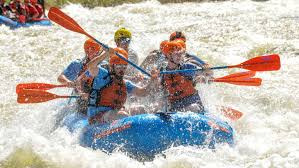
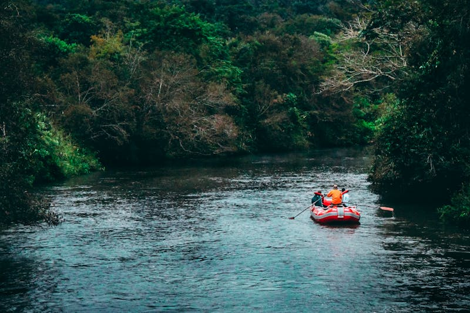
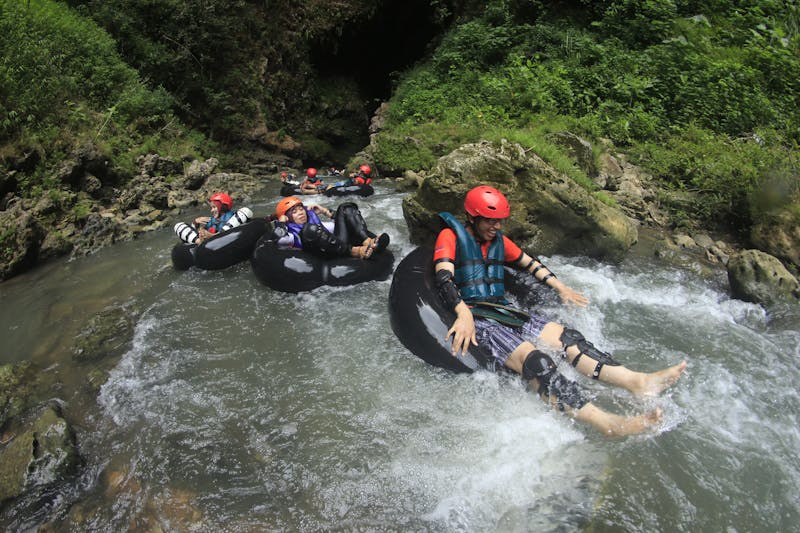
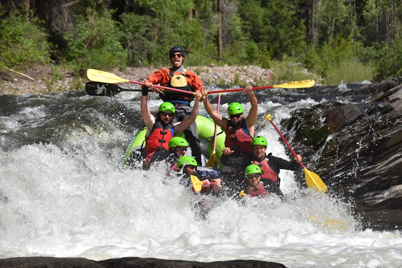

Founded in 1998, Dry Oar Rafting has provided unforgettable adventures down some of the most iconic rivers in the world. From humble beginnings with a few rafts and a passion for the outdoors, we've grown into a leader in guided rafting experiences.


Experience the thrill of white water rafting with Dry Oar Rafting. Our mission is to provide unforgettable adventures on the river, ensuring safety and fun for all our guests.
Founded in 1998, Dry Oar Rafting has provided unforgettable adventures down some of the most iconic rivers in the world. From humble beginnings with a few rafts and a passion for the outdoors, we've grown into a leader in guided rafting experiences.




